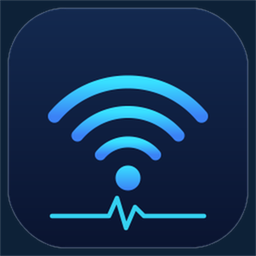
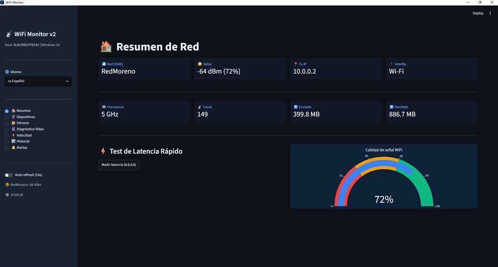
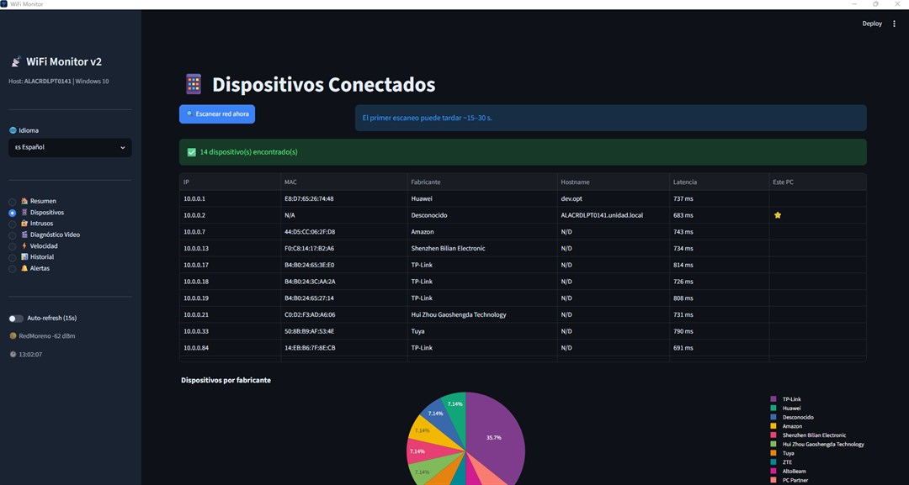
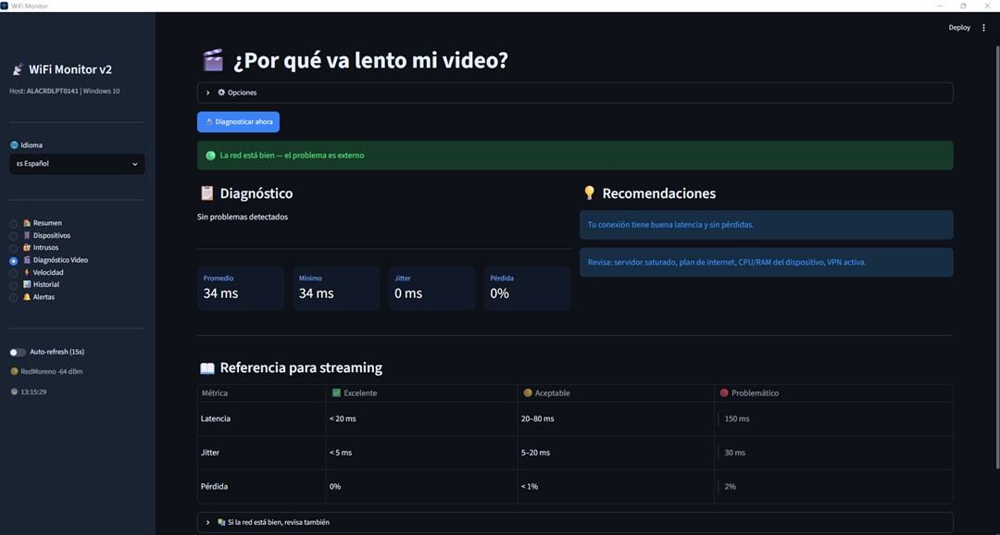
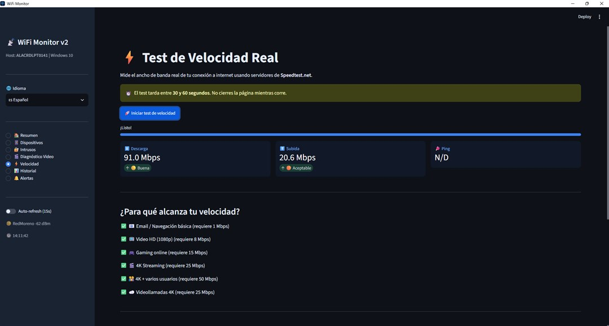

WiFi MonitorWiFi Monitor detecta cada dispositivo conectado a tu red, reconoce el fabricante de cada uno, mide tu velocidad real y te avisa si aparece un equipo que no reconoces. Desde tu PC con Windows, sin entrar a configurar el módem. Una app que se usa, no solo se mira.
En la mayoría de los módems la lista de dispositivos se ve así: android-a8f2c91, unknown-device, DESKTOP-4KP91. Nombres que no sirven para decidir nada. Aquí cada aparato sale con su fabricante, su consumo y su historial — y si compartes la clave del wifi con el primo, el inquilino o el vecino, eso es exactamente lo que necesitas saber.
Detecta todo lo conectado a tu red y reconoce el fabricante de cada dispositivo, incluso el que no tiene nombre.
Corre una medición de descarga, subida y latencia cuando lo necesites, sin salir de la app ni abrir el navegador.
Guarda el tráfico enviado y recibido de los últimos siete días para que notes patrones, no solo el momento actual.
Recibe una notificación de escritorio en el momento en que algo cambia en tu red.
Define qué dispositivos son tuyos y la app marca cualquier equipo que aparezca fuera de esa lista.
Español, inglés, portugués, francés, alemán e italiano, sin configuración extra.
Cuatro pantallas reales de la app. Nada de maquetas.




Escanea tu red y te muestra todo lo que está conectado en ese momento.
Te toma un minuto, una sola vez. A los que no reconozcas los ubicas en la casa por el fabricante.
Si algo entra fuera de tu lista, te avisa. Y si decides cerrar la red, el orden correcto es cambiar la clave del wifi en el módem y avisar a quien le hayas dado acceso.
No bloquea dispositivos por ti. Identifica exactamente cuál es cada aparato —fabricante, IP y MAC— para que tú lo bloquees en las opciones de tu módem, que es donde se puede hacer. Tampoco entra ni cambia nada de tu router: solo lee lo que necesita para mostrarte la red.
Es una app de PC con Windows (no de celular), y tu PC tiene que estar encendido y conectado a la red para poder monitorearla.
No. Se instala como cualquier app de la Microsoft Store y funciona con el wifi al que ya estás conectado.
No. Es una aplicación de escritorio para Windows 10 y 11. Existen apps de celular para lo mismo, pero esta se pensó para la PC: es donde ves la lista completa y donde puedes comparar con la página del módem.
No, y desconfía de la app que te lo prometa. Los aparatos se identifican por su fabricante y su dirección de red, no por el nombre de su dueño. Lo que sí funciona: apaga aparatos uno por uno hasta que el desconocido desaparezca de la lista, y así confirmas cuál es.
Prueba gratis de 7 días con todas las funciones activas. Después, USD 2,99 desde la Microsoft Store.
No. Corre en segundo plano y el escaneo de dispositivos es liviano. Las notificaciones de escritorio se pueden desactivar.
Sin registros ni tarjeta para empezar. Instala desde la Microsoft Store y usa todas las funciones desde el primer minuto.
Abrir en Microsoft StoreWindows 10 (1809 o superior) y Windows 11 · Pago a través de Microsoft